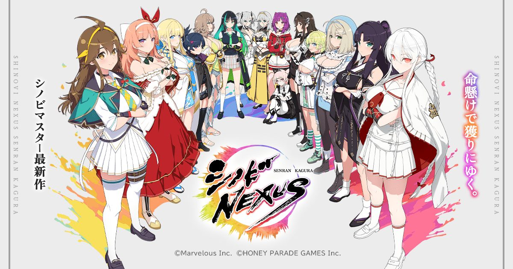

2026-11-25 · 手游 / IP 运营

Marvelous 与 HONEY∞PARADE GAMES 已经确认：2026 年 11 月 29 日，日本时间，开服。 平台是 iOS、Android 和 Windows 11 PC（走 DMM GAMES），11 月 28 日开放预下载，具体开服钟点会在官方 X 上另行公布。 免费游玩，含道具收费。全球版没有消息。
绝大多数中文报道到这里就结束了：日期、平台、回合制、换装、桑拿。 但这四个字里藏着一件事——11 月 29 日不是随便挑的。 九年前的 2017 年 11 月 29 日，这个系列的第一款手游《忍者大师 闪乱神乐 NEW LINK》在日本开服。 续作选在同月同日上线，是策划层面的仪式：它想让老玩家在同一天把日历翻回去。
把官方口径里能核实的日期排一行：
九年，同一天。这种排期在日本手游里不算罕见，但它透露了一个判断： 这款作品在企划阶段就被定位成「接棒」，不是「新作」。 前作停服到续作开服，中间隔了整整一年半——一年半在手游生命周期里是很长的一段空白， 长到足够让一批玩家彻底离开。选一个能被记住的日子回来，是在跟这批人说：你们没走错门。
需要说明的是：11 月 29 日在日本是「いい肉の日」（好肉日），游戏圈确实爱用谐音日上线， 所以这个日子也可能只是顺手。但放在这个 IP 的时间轴上，与开服纪念日重合的解释更有说服力。 官方没有明说，我们按前者理解——即便它只是顺手，结果也是一样的：老玩家会在同一天想起上一次。
中文报道里出现频率最高的一句是：「这是系列首次从动作游戏转向回合制 RPG。」 这句话是错的，而且错得有意思。
系列本体确实是动作——2011 年起步就是「少女忍者的青春战斗动作」，主机上的《闪乱神乐》以快节奏竞技场格斗为招牌。 但系列的第一次转型发生在 2017 年，就在那款手游里： 《NEW LINK》的战斗是自动回合制，五人编队，角色自动出手，玩家的工作是养成、配队、看演出。 它靠「抽卡 + 换装 + 剧情」活了七年半，累计收入据中文资料超过 300 亿日元（该数字来自百科类来源，未见 Marvelous 财报直接印证，谨慎引用）。
所以《忍者NEXUS》做的不是「动作转回合」，而是「自动转手动」。 官方定位「ハイパーシノビバトル（Hyper Shinobi Battle）」，实机里是 cel-shaded 3D 的指令式回合战斗—— 玩家挑技能、挑目标、挑时机，忍者化身的演出插在中间。
这个区别为什么重要？因为它决定了这款游戏在解决什么问题。 如果它是「动作转回合」，那要解释的是「为什么砍掉动作」； 但它实际是「自动转手动」，要解释的是「为什么把决定权还给玩家」—— 而答案几乎是明摆着的：自动战斗的手游，玩家看录像；手动指令的手游，玩家做决策。 后者能承载更高的策略深度，也能承载更高的卡牌价值。
这是一次向「可玩性」的回收，动机却是商业的。两件事不冲突，但要分开说。
日本媒体在先行试玩里给了两句很关键的评价，中文转述时基本被删掉了： 战斗「稳妥但新意有限」，以及「稀有度带来的性能差距让人在意」。
第一句是手感判断，第二句是结构判断。而这两句其实是同一件事的两面。
指令式回合 RPG 的乐趣来自决策空间：编队、技能顺序、资源分配、克制关系。 但在这套框架里，如果卡牌稀有度直接决定面板上限，那么最优解会迅速收敛成「把高稀有度卡摆上去」—— 决策空间被压扁，玩家的操作感就退化成「点最强的那个」。 先行试玩说「新意有限」，说的不是战斗动画不好看，是它在第 20 小时和第 2 小时做的决定是同一类。
这不是《闪乱神乐》一家的问题，是整个卡牌指令 RPG 品类的结构性宿命： 你要靠卖卡赚钱，就不能让低稀有度卡太有用。 能缓解它的手段只有一种——把强度做成「组合」而不是「单卡」， 让低稀有度卡在特定体系里不可替代（拐、充能、控场）， 这样玩家仍然要抽卡，但也仍然要做搭配。
官方这次给的角色池是 15 名主要忍者，跨三所学校： 秘立蛇女子学园（恶忍，标榜「恶比善更宽容」）、 死塾月闪女学馆（善忍名门）、 辉立天翔学院（善忍、恶忍与普通人共读）。 系列画师八重樫南继续负责角色设计，前作的月光、闪光以成长后的姿态回归， 新面孔是红姬、嘉神、风、胡桃、响。
这个「三校一锅」的设定，是系列第一次把「善恶」做成制度而不是对立： 善忍隶属国家，接要人警护；恶忍不属国家，接暗杀与破坏。 两边长期敌对，但忍者相争会催生危害平民的「妖魔」， 于是有了禁止善忍与恶忍相争的「忍禁戒」。
我们注意到这条设定的功能：它给 PVP 找到了叙事理由。 手游需要一个能反复对打的场域，「忍禁戒」正好提供了「切磋不算相争」的合法性； 「妖魔」则提供了 PVE 的敌人来源。一个设定同时解决两个系统需求， 这是老 IP 才写得出来的东西——它不需要新造世界观，只需要把旧设定往前推一步。
首发福利的数字很干净：1500 忍魂（够 10 抽）+ 一张 SR 红姬（忍转）卡， 外加教程结束后的一次十连，可以无限重抽，直到刷到想要的卡为止。
先做一条基准换算：1500 ÷ 10 = 单抽 150 忍魂。 记住这个数，因为它能反推后续所有礼包的性价比——一款游戏的首发档位，就是它给整个经济系统定的标尺。
然后是这个「无限重抽」。它值得单独说，因为它是与保底相反的一种设计。
保底的逻辑是「你抽得够多，我保证给你」——成本是钱，收益是确定性。 无限重抽的逻辑是「你重来得够多，总能碰上」——成本是时间，收益也是确定性。 两者都在降低开局方差，但一个向钱包收费，一个向耐心收费。
这个月刚好有个反例摆在货架上：米哈游的《崩坏：因缘精灵》在 11 月 25 日开启的最终封测里， 用的是「限定池首次获得的五星必为当期限定」（我们 11 月 5 日那篇拆过这条规则的全貌， 见《因缘精灵》定档那篇）—— 那是把「第一次的赌注」直接拿走，代价由厂商承担。
《忍者NEXUS》走的是另一条：赌注还在，但允许你重摇。 一个用规则消灭方差，一个用时间消化方差。 对玩家来说，后者更累；对厂商来说，后者的收入模型更安全—— 因为重抽只影响「开局那十抽」，之后每一次抽卡都照常付钱。
所以我们把这条福利读成一个信号：它愿意让新人的第一天舒服，但不打算让整个游戏变便宜。
这一条几乎没有人写，但对老玩家最痛。
官方对《忍者NEXUS》与《NEW LINK》的关系，用词是「继承故事与世界观的正统续作」。 请注意它继承的是什么：故事、世界观。不是卡，不是服装，不是账号。
前作结束时的处理方式，其实已经是行业里比较体面的一种： 2025 年 5 月 30 日停服，同时上线离线版——保留主线剧情的全部演出、 换装与自定义、忍法档案、场景模型（diorama）、以及可在离线模式里游玩的忍务； 玩家过去获得的卡面插画仍可浏览，已培育的卡牌可以在离线忍务里使用。 数据可以通过 Marvelous Connect 账号转移到移动设备，期限到 2026 年 5 月 29 日。
但有一样东西被彻底清掉了：所有联动内容。 《NEW LINK》七年半里联过《死或生》《一骑当千》《拳皇》《女皇之刃》《恶魔高校》《出包王女》《地错》…… 这些卡与服装在离线版里全部移除，一张不留。
原因不难猜：联动授权是有期限的，停服后继续让玩家在离线版里看到别的 IP 的角色，是法律问题，不是技术问题。 这也解释了为什么续作不继承卡池——不是不想，是不能。
所以《忍者NEXUS》对老玩家的承诺，本质上是一句很克制的话： 「故事我接着讲，账号我们从零开始。」 这在一个靠七年半积累活下来的 IP 身上，是最难开口、也最必须开口的一句。
官方列的平台是 iOS、Android、Windows 11 PC（经 DMM GAMES）。
注意这里写的是 Windows 11，不是 Windows。这不是笔误—— DMM GAMES 的客户端在新版本里已经把 Windows 10 移出支持范围， 所以这条平台说明同时是一道技术门槛和一道市场筛选： PC 玩家必须同时满足「在日本」和「系统够新」两个条件。
再加上「仅确认日服运营，全球版未公布」，这款作品的发行半径就被钉死在日本国内。 对比系列自己的历史：外传《Neptunia x Senran Kagura: Ninja Wars》是走过全球的（PS4 → Switch → Steam）； 《NEW LINK》有繁中版，但最终只在日服走完故事。 这个 IP 的海外发行，历来是「看情况」。
原因不外两件：内容分级（系列的美术风格在欧美平台上长期是敏感项），以及渠道（DMM 本身是日本本地平台）。 对中文玩家来说，现实结论很简单：11 月 29 日不是一个「全球玩家一起进服」的日子， 想玩要么有日区账号，要么等——而等这件事，官方没有给时间表。
加分项：角色表现与互动内容（先行试玩的共识是「模型和表情明显进化」， 剧情虽是立绘对话的「纸芝居」形式，但 3D 模型的全身表演撑住了场面）； 换装、diorama 拍照、Shinobi Spa（桑拿挂机加好感）这套「生活面」系统的完整度； 以及一个老 IP 才有的设定密度。 扣分项：战斗决策空间被稀有度压扁的风险、日服限定、以及系列最核心的「动作手感」在这款里彻底不存在。
11 月 21 日那场 75 分钟特别节目，是这款游戏第一次公开实机。 三位声优现场从主界面、换装、编队一路打到战斗——这个流程本身就是一次自我说明： 官方把「换装」排在「战斗」前面演示。它在告诉你，这款游戏的重心在角色，不在战棋。
另一个观察：从 8 月 3 日公布正式标题到 11 月 29 日开服，全程不到四个月。 对一款开发了至少一年半的项目，这个宣发窗口短得反常—— 通常意味着官方不想给玩家太多时间做预期管理，只想尽快把服务器打开。
「自动转手动」这一步，方向是对的，但只走了一半。 真正决定它能不能活过第三年的，不是战斗做得多花， 而是它敢不敢让低稀有度卡在某套体系里变得不可替代。 如果答案是不敢，那这款游戏会变成一款「抽到谁就用谁、谁的数值高谁上」的换装相册—— 好看，但玩不久。
至于「日服限定」，我们认为短期内不会变。 这个系列的商业模型一直建立在日本本土的付费习惯上， 而它最需要的那批玩家，恰好也在日本。
| 阶段 | 形态 | 强度来自 | 玩家留住的原因 |
|---|---|---|---|
| 2011 起 主机本体 | 竞技场动作 | 操作 | 打得好不好，自己知道 |
| 2017–2025 NEW LINK | 自动回合制 + 卡牌 | 卡牌稀有度 | 七年半的剧情与收集 |
| 2026 NEXUS | 手动指令回合制 + 卡牌 | 稀有度 × 编队 | 角色关系 + 换装 + 策略参与感 |
这张表想说的事情很简单：这个系列每一次换形态，都是把「强度来自哪里」往前挪一格。 从操作挪到卡牌，现在试图挪到「卡牌 × 编队」。 第三列如果最终只写成「稀有度」，那这次迁移就失败了。
没有日区账号，实测留给开服后。但有一件事现在就能算： 「无限重抽」的期望价值。
设一次十连中至少出一张目标卡的概率为 p，重抽 n 次，至少成功一次的概率是 1 − (1 − p)n。
p 由官方概率表决定，目前未公开——正式开服后第一件要查的事，就是这条。 但公式本身已经给出了判断：如果目标卡是低概率的头奖， 「无限重抽」实际换来的不是一个保证，而是一段长度未知的重复劳动。 我们在开服当天会把 p 填进这张表，看看它到底值多少分钟。
一、它挑对了日子。11 月 29 日，前作开服的第九年同一天。 这个安排的用意不需要官方解释，能记住这个日期的玩家自然懂。
二、它做的不是「转型」，是「回收」。 系列早在 2017 年就交出了动作手感，这次只是把「自动」换回「手动」。 方向对，但只解决了一半问题——决策空间会不会被稀有度压扁，要开服后三周才看得出来。
三、它对老玩家的承诺很克制，也很诚实。 故事接着讲，卡从零开始。 七年半的收藏留在离线版里，联动内容因授权到期而消失——这是行业规则，不是谁的不义。
至于要不要在 29 号那一天去挤日服—— 我们的建议是：先等三天，看畅销榜排名和稀有度差距的真实反馈，再决定要不要投入。 这不是一款「晚三天就落后」的游戏，它是一款要靠长期陪伴才成立的作品。 而长期陪伴这件事，值得先确认对方打算陪你多久。
信息来源：Marvelous / HONEY∞PARADE GAMES 官方新闻稿（2026-08-03，正式标题与预注册公告）、 Marvelous 定档新闻稿与 11 月 21 日特别节目（2026-11-21）、官方站点 hpgames.jp/shinovi-nexus、 GameHaunt / Enduins / Gacha Go! 对定档与首发福利的报道（2026-11）、 《NEW LINK》停服与离线版公告（2025-05）、以及日媒先行试玩的中文转述（网易）。 系列累计收入 300 亿日元一说来自中文百科类来源，未见官方财报印证，文中已标注； 概率换算为 8bitACG 编辑部推演，实际概率以开服后官方公示为准。